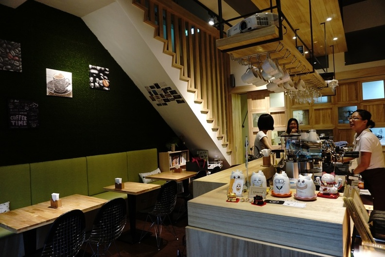

喵居珈琲.民宿 Meow G Cafe

這間喵居其實是間民宿, 店內有三隻很可愛的貓 ,
來花蓮玩的朋友們, 可以來這間小而巧的民宿體驗唷~ 因為民宿房間不多, 最好先提前預訂!!
老闆很熱情, 那時候點了一杯耶加就跟老闆聊起來了XD 還跟老闆交流手沖的方法, 甚至讓我現場沖了一支巴拿馬藝妓sample豆, 當下真的超抖的QQ
喝咖啡之餘還可以跟三隻喵店長玩玩唷~ 他們也超可愛的XD
這裡的咖啡豆都偏淺焙, 剛好也是我喜歡的調性, 店內風格也很溫馨, 覺得來花蓮一定要來這家店瞧瞧!!
,
來花蓮玩的朋友們, 可以來這間小而巧的民宿體驗唷~ 因為民宿房間不多, 最好先提前預訂!!
老闆很熱情, 那時候點了一杯耶加就跟老闆聊起來了XD 還跟老闆交流手沖的方法, 甚至讓我現場沖了一支巴拿馬藝妓sample豆, 當下真的超抖的QQ
喝咖啡之餘還可以跟三隻喵店長玩玩唷~ 他們也超可愛的XD
這裡的咖啡豆都偏淺焙, 剛好也是我喜歡的調性, 店內風格也很溫馨, 覺得來花蓮一定要來這家店瞧瞧!!